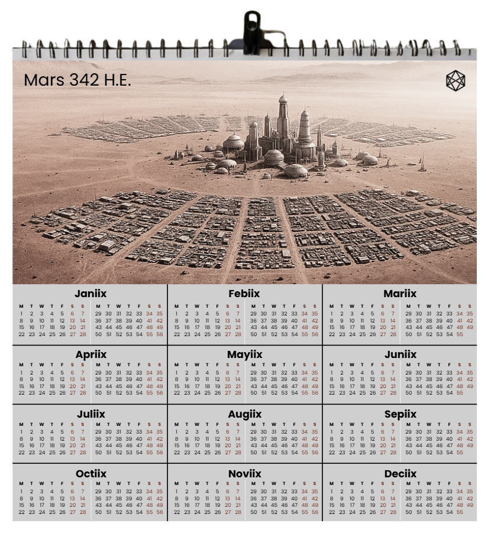
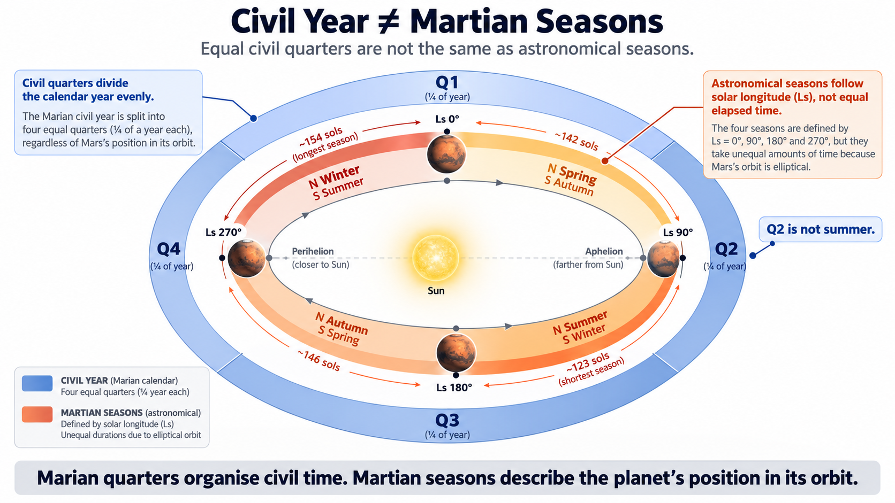

INDIVIDUAL - LIVE
16) A Long Year
Living Through a Marian Year
A Marian year is long enough to change the meaning of the word year.
It contains 668 sols in a common year and 669 in a leap year, equivalent to about 687 Earth days. The individual sol remains reassuringly day-sized, so the extra length does not arrive through extraordinarily long mornings or endless evenings. It accumulates quietly, one almost-familiar day at a time, until New Year has moved nearly twice as far away as an Earth-born person expects.
This is where a calendar stops being an exercise in arithmetic and becomes a way of living.
On paper, 668 is simply the sum of twelve month lengths. In practice, it means local anniversaries tied to Mars's orbit return after almost two terrestrial years. The beginning, middle and end of the year are separated by much greater amounts of human elapsed time than the same words suggest on Earth.
Daily life would not necessarily feel exotic. The sol turns over at roughly the expected pace. The week still provides a short recurring rhythm. Minths arrive at something close to a familiar four-week interval.
Then the Martian year simply keeps going.
That is one reason Marian needs intermediate landmarks. Without them, 668 sols is less a useful civil year than a very long corridor.
What “annual” means on Mars
Earth has trained us to attach an extraordinary variety of activities to the year. We speak of annual budgets, annual leave, annual medical checks, school years, birthdays, maintenance schedules, sporting seasons and performance reviews as though annual described one naturally appropriate human interval.
It does not.

Detailed figure description
A fictional illustrated wall calendar headed “Mars 342 H.E.” places an imagined Martian settlement above twelve calendar panels. It is a future-history design mock-up, not evidence of an actual Marian date, existing Martian era, or established settlement. The chapter uses this image to explore how a native civil calendar might appear in everyday life.
Editorial note: this is a descriptive summary, not an independently verified transcription of every diagram label. Refer to the surrounding text and the Marian technical specification for authoritative numeric details where applicable.
Some of those activities genuinely relate to Earth's orbital and seasonal cycle. Others use the year largely because 365 days happens to be a convenient social period. Mars makes the distinction impossible to ignore.
The Martian year remains the natural large-scale unit for things genuinely tied to Mars's annual cycle: local seasonal history, environmental patterns, long-term civil chronology and whatever anniversaries or festivals future communities choose to celebrate once per local orbit.
It does not follow that everything humans currently do once per Earth year should now wait 668 sols. A machine does not necessarily need almost twice as long between inspections because its owner has moved planets. A child's biological development does not slow to match Mars's orbit. An organisation could perfectly reasonably define its statutory year in Martian years while reviewing operations several times within one.
Marian does not prescribe those choices. It provides shorter standard scales so that activities need not be forced into the year merely because terrestrial language once put them there.
Living on Mars would therefore expose something that Earth allows us to overlook:
an annual cycle and a useful human planning interval are not inherently the same thing.
The physical year underneath the civil one
The Marian year gives Mars's orbit a regular civil structure. It does not make the orbit itself regular.
Mars has real astronomical seasons because its rotational axis is tilted relative to its orbital plane. Its orbit is also substantially more eccentric than Earth's, so the planet moves around the Sun at noticeably different speeds during different parts of the year: faster near perihelion and more slowly near aphelion.
Equal movements through seasonal angle therefore take unequal amounts of elapsed time. The four astronomical seasons are not four equal quarters of 668 or 669 sols.
That distinction matters because Marian also contains four quarters. They are not the same thing.
A common-year Marian quarter contains exactly 167 sols because it is one fourth of the civil year. An astronomical season covers a 90° interval of Mars's seasonal coordinate, Ls, and takes however long Mars requires to travel through that part of its orbit.
| Structure | Basis | Elapsed duration |
|---|---|---|
| Marian quarter | Equal civil fraction | 167 sols in a common year |
| Astronomical season | 90° of Ls | Unequal |
Calling Q1 “spring”, Q2 “summer” and so on would therefore be wrong twice over. First, the astronomical seasons have unequal elapsed lengths. Second, Mars has two hemispheres: northern spring is southern autumn, and northern summer is southern winter.
A planetary civil calendar cannot sensibly make one hemisphere's seasonal vocabulary the universal names of its quarters.
Marian therefore keeps the two systems separate. A resident might simultaneously be in Quarter 2 and northern summer without contradiction. The first statement describes position in the civil year; the second describes position in Mars's seasonal cycle.
They are different pieces of information.
Seasonally anchored, not seasonally divided
The distinction is slightly more subtle because Marian New Year itself is astronomically anchored.
The annual reference is Ls = 15°, with the civil year beginning at the appropriate following Airy-0 midnight. Marian therefore does not allow New Year to wander arbitrarily around Mars's seasonal cycle.
But Ls = 15° is not an equinox or solstice, and the twelve Marian months are not equal 30° sectors of the orbit. They are primarily civil periods of 55 or 56 sols. Because Mars changes speed around the Sun, those approximately equal elapsed periods cover different amounts of seasonal angle.
That is deliberate.
Marian uses two complementary coordinates. A civil answer to “Where are we in the year?” might be:
Month 8, Quarter 3
An astronomical answer might be:
Ls = 203°
The first is useful for contracts, schools, administration and ordinary planning. The second is useful when actual seasonal geometry matters. There is no need to make either pretend to be the other.
This separation would matter operationally. Mars's seasonal environment does not disappear because people live inside engineered habitats. Solar geometry changes. Available sunlight changes. Surface temperature and atmospheric conditions vary, and dust activity has seasonal patterns.
Power systems, surface transport, construction, agriculture and science may therefore care intensely about orbital position even if the civil calendar remains regular. A weather service should not forecast from the month number alone, and an engineer should not infer solar conditions merely from “Q3”.
The date provides civil orientation. Specialist systems provide environmental precision.

Detailed figure description
A Sun-centered orbital diagram contrasts the four equal-duration Marian civil quarters with the unequal lengths and positions of physical Martian seasons. Curved rings, four quarter markers and annotations show that equal elapsed civil intervals do not represent equal areocentric solar-longitude arcs on an eccentric orbit. For exact seasonal position, use the astronomical Ls coordinate rather than inferring it from the civil month.
Editorial note: this is a descriptive summary, not an independently verified transcription of every diagram label. Refer to the surrounding text and the Marian technical specification for authoritative numeric details where applicable.
That is how calendars already work on Earth. July does not guarantee warm weather everywhere, and knowing that an event occurs in Q1 does not tell an engineer the elevation of the Sun. Mars simply makes the separation harder to ignore.
One calendar, two hemispheres
A global Martian calendar also has to work for settlements with very different seasonal experiences.
A northern and southern settlement can both agree perfectly that it is Month 5. They cannot both call the same period summer. The physical orbit is shared; its local environmental meaning is not.
That gives Marian another reason to keep its principal civil units neutral with respect to hemisphere. Months, minths, Sixths and quarters can be common across the planet while seasonal interpretation remains local.
If Mars eventually develops settlements spread across large ranges of latitude and longitude, that distinction becomes more useful rather than less. The planetary calendar supplies shared chronology; location supplies climate.
Mars is under no obligation to make the two line up neatly for us.
Landmarks in a long year
Once we stop expecting quarters to double as seasons, their civil purpose becomes clearer. A quarter tells us how far through the annual cycle we have travelled. At the end of Q1, one fourth of a common Marian year has elapsed; at the end of Q2, half; at the end of Q3, three quarters.
That remains useful even though Mars may have moved through different amounts of orbital angle during those equal elapsed periods.
But 167 sols is a long interval. An Earth-born resident waiting for the next Martian quarter boundary would be waiting for something closer to half an Earth year than three terrestrial months. That is why the year needs nearer landmarks.
The minth supplies the shortest of Marian's standard intermediate cadences. The month gives one of twelve annual positions. The Sixth creates another marker before the next quarter boundary. The quarter gives the largest simple fractions, and the year contains the whole cycle.
A resident would therefore not normally experience a Martian year by mentally counting from Sol 1 to Sol 668. People rarely experience calendars that way. We move through landmarks.
Month 9 means the final quarter has begun. The middle of the year has meaning because the structure makes it visible. The next minth boundary is close enough to matter in ordinary planning even when New Year remains distant.
That psychological work is part of what a civil calendar is for. It turns a long orbital period into something people can navigate.
A leap year barely feels different
The distinction between common and leap years matters technically but should have little effect on how most of the year feels.
A common year contains 668 sols; a leap year 669. The first eleven months are identical, and the additional civil position appears only at the end of Month 12. For almost the entire year, therefore, nobody needs to care which type they are living through.
Nor should either civil year be imagined as an exact copy of the astronomical interval from one Ls = 15° passage to the next. The astronomical recurrence contains a fraction of a sol; civil years contain whole sols. The 59/100 intercalation rule keeps the civil sequence tracking the astronomical reference over time, while the precise seasonal coordinate remains available whenever it is needed.
That is normal calendar behaviour. The physical year and the civil year remain connected without being identical.
“Once a year” becomes a stronger phrase
The largest human adjustment may therefore be linguistic rather than mathematical.
On Mars, once a year means something considerably rarer in elapsed human time. A local festival celebrated every Martian year would arrive less often than an annual terrestrial festival. A person counting age only in Martian birthdays would accumulate those birthdays much more slowly than somebody counting terrestrial ones. A four-Martian-year institutional term would represent an extraordinary span of terrestrial time, while an annual maintenance rule copied thoughtlessly from Earth would nearly double the interval between interventions.
None of those examples tells future Mars how it should celebrate birthdays, run institutions or maintain machinery. They illustrate why terrestrial practices cannot simply be carried across by retaining their labels.
Once the underlying unit changes, the habits attached to the word do not automatically remain equivalent.
Some activities will properly belong to the Martian year. Others will need minths, months, Sixths or specialist intervals of their own. The year can belong completely to Mars without forcing every human activity to stretch with it.
Eventually, 668 may stop sounding long
There is one unavoidable problem with describing Martian civil time from Earth: every comparison starts from Earth.
We say the Marian year is almost twice as long. We call its months nearly two Earth months. We describe a 167-sol quarter as extraordinarily long. Those comparisons are useful while learning the system.
They may become much less important to people who grow up inside it.
A Mars-born resident would not necessarily experience 668 sols as an elongated Earth year. It would simply be a year. Twenty-eight sols might feel like the obvious short civil cadence. Month 10 could carry immediate annual meaning without anyone translating it into terrestrial days. The approach of New Year could have a familiar emotional shape even though it had taken almost two Earth years to return.
That sort of intuition cannot be specified. It is acquired through repetition.
Whether Marian would ever reach that point is a human-factors question that cannot be settled on paper. But it is the right long-term test: not whether the arithmetic looks elegant to the people who designed it, but whether the people using it eventually stop noticing the arithmetic at all.
A year people can live inside
The Marian year therefore has two simultaneous characters.
Physically, it belongs to Mars: a long orbital cycle with unequal astronomical seasons, opposite hemispheric phases and a recurring Ls = 15° reference. Civically, it is regularised into something people and institutions can navigate: near-equal months, equal common-year quarters and shorter landmarks that prevent the 668-sol span from becoming shapeless.
The two structures do not coincide perfectly, and they are not intended to. The civil calendar provides stable coordination; astronomical coordinates provide precise seasonal position. A person can live in both.
That is a more useful picture of Marian than imagining four equal civil quarters painted onto four unequal Martian seasons. Mars has one physical year. Marian gives people a civil way to move through it.
A calendar becomes culturally real when people stop translating it into another calendar before they understand what it means.